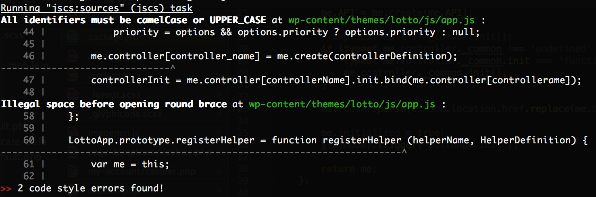

Automate All The Things!
front-end
Once and nowadays
Once
HTML, CSS, JS, FTP, browser
Nowadays
linting, preprocessing, concating, minification, versioning, testing, coverage, performance checking, dependency management, deployment
Manually
| Pros | Cons |
|---|---|
| cheap | fixed cost |
| fast | error prone |
| easy | boring |
Manually
| Pros | Cons |
|---|---|
| cheap | fixed cost |
| fast | error prone |
| easy | boring |
Automation
| Cons | Pros |
|---|---|
| time taking setup | lower cost as time pass |
| preparing might be slow | predictable |
| harder | interesting |
Automation
| Cons | Pros |
|---|---|
| time taking setup | lower cost as time pass |
| preparing might be slow | predictable |
| harder | interesting |
Challenges and solutions
Challenge #1
watching changes
Challenge #1
- triggering compilation manually
- lack of standardization
- no livereload
- no additional actions on changed files
Solution
- proper task/option to build tool
- livereload / BrowserSync (with stream)

- linting etc.
Challenge #2
Vulnerability to
easy-to-avoid errors
Challenge #2
- typos
- no semicolons
- no curly brackets in function definition
- no strict comparision (== vs ===)
- undeclared variables
- code complexity
- etc.
Solution
- JSHint / ESLint
- PHPLint, CSSLint
Challenge #3
Consistent Code Style
Challenge #3
Different developers === different formatting
- indentation
- tabs vs spaces
- different variable declaring style
- unused variables
Solution
- .editorconfig
- JSCS or ESLint with proper preset 
Challenge #4
commit naming
Challenge #4
Different commit names conventions
- meaningless commit names
- no context
- no common standards
- different tenses
Solution
Angular Git Commit Message Conventions
-
type, e.g.
- feat - a new feature
- fix - a bug fix
- docs - documentation only changes
- scope, e.g. "registration"
- body and description
Challenge #5
code analysis and keeping conventions
Challenge #5
- how to enforce keeping commit name convention
- how to run code quality checks before commit
Solution
Git hooks
- Git hook “commit-msg”
- Git hook “pre-commit” validation runner
Challenge #6
release and changelog
Challenge #6
- QA and project managers would like to see what has changed
- tools like JIRA/TeamCity do not always mirror production
- manual changelog updating takes time
Solution
- automatic changelog generation
- automatic versioning
Challenge #7
Image size
Challenge #7
- images added by content editors weren’t compressed enought
- longer app loading
- finding and manual compression
Solution
Imagemin with plugins for compressing different file types
Challenge #8
CSS size
Challenge #8
- CSS code might be redundant
- manual optimization might be time taking and not 100% effective
Solution
PurifyCSS
- detect unused selectors
- detect dynamically added selectors
Challenge #9
test automation
Challenge #9
- QA, on every deploy, manually test core functionality
- vulnerable to human errors and lack of time
Solution
- NightwatchJS browser automation using selenium
- Browserstack/Soucelabs usage
plans for the future
plans for the future
- Docker environment for devs
- performance budget
- visual diff
- and many more